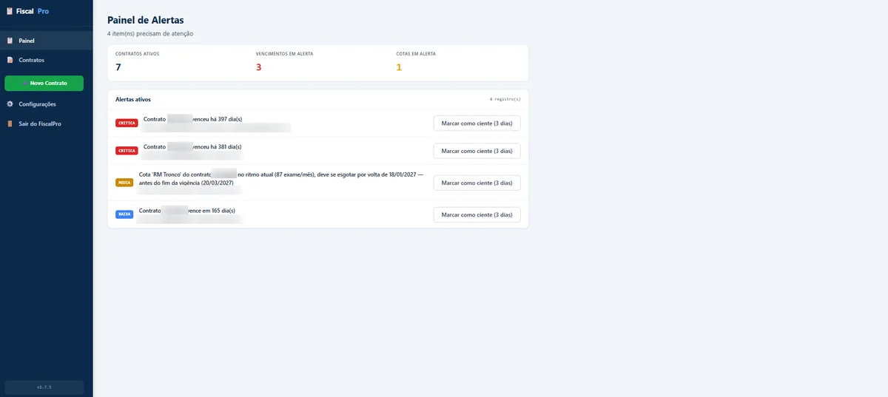
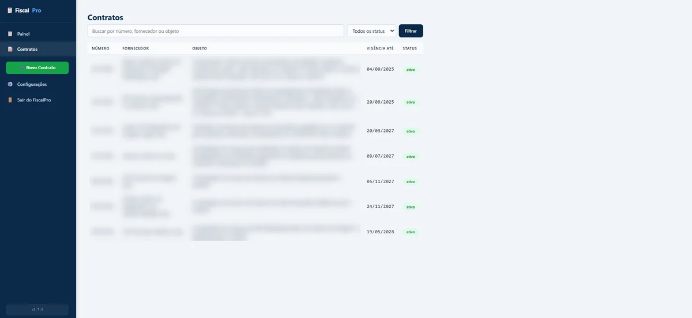
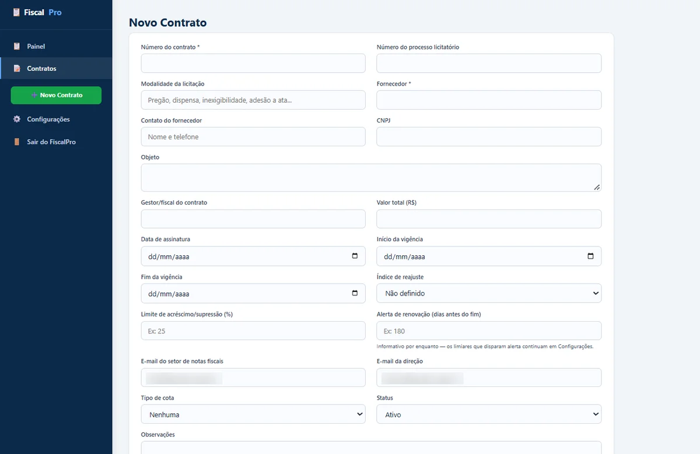
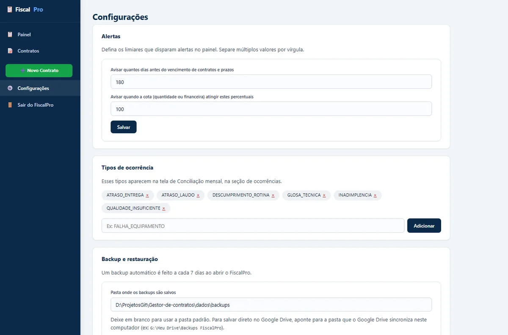
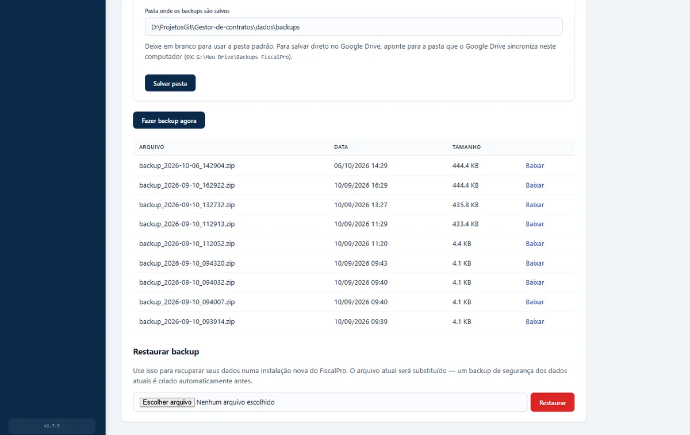

FOLHA Nº 01 — DETALHES DO PROJETO
FiscalPro
Gestão e Fiscalização de Contratos Hospitalares
Aplicativo desktop que tira a fiscalização de contratos públicos de um hospital das planilhas: controla vigências, cotas de consumo, conciliação mensal do que foi executado e dispara alertas antes que um contrato vença ou uma cota se esgote — tudo offline, num único executável.
FOLHA Nº 02 — O DESAFIO
Prazos e cotas que não podem escapar
Fiscalizar contratos de prestação de serviço num hospital público significa acompanhar ao mesmo tempo prazos de vigência, aditivos, cotas de exames contratados e a conferência mensal entre o que a empresa diz ter executado e o que está registrado no sistema interno. Em planilhas, um vencimento ou um estouro de cota passa despercebido até virar problema.
O desafio era entregar uma ferramenta que rodasse na máquina do próprio fiscal, sem servidor, sem depender de internet e sem instalar nada — dentro de uma rede hospitalar com antivírus corporativo e restrições de TI —, mas que ainda assim se atualizasse sozinha a cada nova versão.
FOLHA Nº 03 — A SOLUÇÃO
Interface e Funcionalidades
O FiscalPro é distribuído como um único executável: duplo clique e a interface abre no navegador, servida localmente pela própria máquina. Os dados ficam num banco SQLite local, e nada sai do computador do fiscal. Nas imagens abaixo, nomes de fornecedores, números de contrato e e-mails institucionais foram desfocados.

Painel de Alertas
Recalcula a cada abertura os alertas de vencimento de vigência, de percentual de cota consumida e de ritmo preditivo — que avisa quando, no ritmo atual de consumo, uma cota vai se esgotar antes do fim do contrato, mesmo que o percentual ainda pareça baixo. Cada alerta pode ser marcado como ciente por 3 dias e volta sozinho se a situação persistir.

Contratos
Listagem com busca por número, fornecedor ou objeto e filtro por status, ordenada pelo vencimento mais próximo. Cada contrato concentra suas cotas, aditivos, prazos, documentos anexados e a conciliação mensal do que foi executado.

Cadastro Completo
Dados da licitação, vigência, índice de reajuste, limite de acréscimo/supressão, tipo de cota e contatos para envio de relatórios, num único formulário.

Regras Configuráveis
Limiares de alerta (dias antes do vencimento, percentuais de cota) e tipos de ocorrência da conciliação mensal editáveis direto na interface, sem mexer em código.

Backup e Restauração
Backup automático a cada 7 dias em .zip (banco + documentos anexados), com pasta de
destino configurável — apontar para uma pasta sincronizada pelo Google Drive garante uma cópia
fora da máquina sem integrar com nenhuma API de nuvem. Antes de restaurar, o app cria um backup
de segurança do estado atual. Além das telas acima, o FiscalPro faz a conciliação mensal de cada
item contratado (quantidade informada pela empresa × registrada no sistema interno × aprovada,
com cálculo automático de glosa) e gera relatórios mensais em PDF por contrato.
FOLHA Nº 04 — ARQUITETURA
Um executável, zero servidor
Python, Flask e SQLite empacotados com PyInstaller num único .exe para Windows — o
usuário final não instala Python nem dependência nenhuma. A interface é Jinja2 com CSS puro e
fontes do sistema, funcionando 100% offline. A atualização automática consulta as releases de um
repositório público no GitHub (o código-fonte fica num repositório privado separado, sem nenhum
token embutido no executável), baixa a versão nova e troca o .exe sozinha, com uma
janela de espera para o antivírus corporativo terminar de verificar o arquivo.
- Python
- Flask
- SQLite
- Jinja2
- fpdf2 (PDF)
- PyInstaller
- Auto-atualização via GitHub Releases